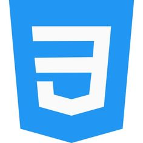
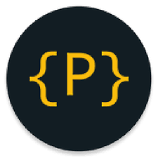

Linguagens e softwares
| HTML |
HTML é uma linguagem de marcação utilizada para estruturar e apresentar conteúdo na web. |
 |
| CSS |
CSS é uma linguagem de estilo utilizada para descrever a apresentação de um documento escrito em HTML ou XML, incluindo cores, layout e fontes. |
 |
| JAVASCRIPT(JS) |
JavaScript é uma linguagem de programação que permite a criação de conteúdo dinâmico e interativo em páginas web, como atualizações em tempo real, animações e manipulação de elementos HTML e CSS. |
|
| PORTUGOL |
Portugol é uma linguagem de programação educacional que utiliza uma sintaxe simples e próxima da língua portuguesa, sendo amplamente utilizada para ensinar lógica de programação. |
 |
| VISUAL STUDIO CODE |
Visual Studio Code é um editor de código-fonte desenvolvido pela Microsoft, que suporta várias linguagens de programação e oferece recursos como depuração, controle de versão integrado e extensões para personalização. |
|
| PORTUGOL.DEV |
Portugol.dev é uma plataforma online que permite a criação, execução e compartilhamento de algoritmos escritos em Portugol, facilitando o aprendizado de lógica de programação. |
 |